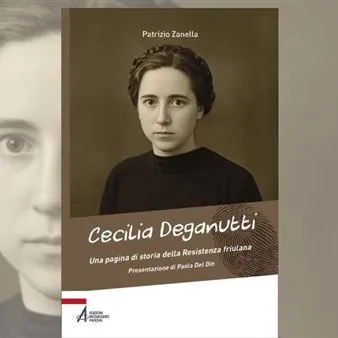

ven 23 ott · dalle 18:00
Cecilia Deganutti. Una pagina di storia della resistenza friulana
23 ottobre 2026 ore 18.00Udine - Biblioteca Civica "V. Joppi" - Sala Tito Maniacco - Palazzo Bartolini - piazza Marconi 8 per la rassegna di "Dialoghi in Biblioteca", si terrà la presentazione del libro edito da Edizioni Messaggero Padova: Cecilia Deganutti. Una pagina di storia…
 Indicazioni
Indicazioni
- Costi e prenotazioni
- Costo non indicato · Prenotazione non indicata
- Programma
- Programma da verificare. Apri la fonte ufficiale per orari e possibili aggiornamenti.
- In caso di maltempo
- Nessuna indicazione specifica pubblicata.
- Note
- Acquisito automaticamente dalla fonte.
L’EVENTO
Descrizione completa
Per la rassegna di "Dialoghi in Biblioteca", si terrà la presentazione del libro edito da del libro edito da Edizioni Messaggero Padova: Cecilia Deganutti. Una pagina di storia della resistenza friulana di Patrizio Zanella Durante la Seconda guerra mondiale Cecilia Deganutti (1914-1945) fece l’infermiera con la Croce Rossa Italiana. Dopo l’Armistizio del ’43 si dedicò all’assistenza dei militari italiani in transito nella stazione di Udine verso i campi di prigionia in Germania. Entrata nella Resistenza nelle Brigate Osoppo, si prese cura di molti partigiani feriti. Ricercata dai tedeschi, si lasciò catturare per non esporre i famigliari a ritorsioni. Torturata dalle SS, fu uccisa nella Risiera di San Sabba. È stata insignita delle Medaglie d’oro della Croce Rossa e al Valor Militare. Una vita emblematica di coraggio e fede. Patrizio Zanella , laurea in Filosofia, in Storia e in Scienze Religiose. È docente negli istituti superiori a Venezia, vive a Padova, collabora con varie testate giornalistiche dedicandosi principalmente alla divulgazione storico-religiosa. È autore di vari saggi fra i quali: Vinicio Dalla Vecchia. Una biografia tra fede e politica (2003); Umanità nei Lager nazisti. Testimonianze (2004); Il Re e l’Imperatore. L’incontro di Francesco Giuseppe e Vittorio Emanuele II a Vigonza nel 1875 (2006); Maria Pastorello. Lo splendore della carità nella chiesa del Novecento (2013); Un clarinetto nel Lager. Diario di prigionia 1943-45 di Aldo Valerio Cacco (2015); Maria Lazzari. Storia di una deportata antifascista (2020).
Info: Sezione Moderna 0432 127 2589 bcusm@comune.udine.it
L'appuntamento sarà visibile anche in diretta sul canale youtube di SBHU
IL PROGRAMMA
Programma e orari
Appuntamenti raccolti dalle fonti elencate. Dove manca un orario, non è ancora disponibile in questa scheda.
Programma pubblicato
- Dal 2026-10-23 al 2026-10-23
INFORMAZIONI UTILI
Prima di partire
- Controllare la fonte prima di partire.
ORGANIZZAZIONE